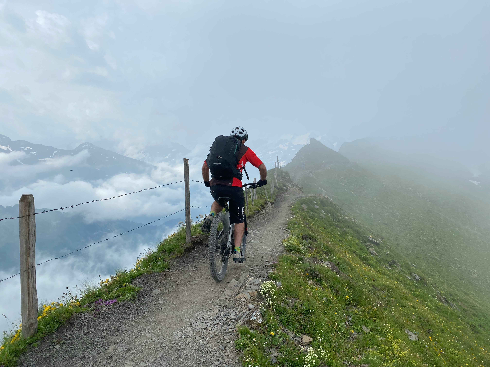

Ride the Peaks, Conquer the Trails

The Swiss Alps offer a world-class mountain biking experience, where the landscape itself seems designed for adventure. Imagine winding through lush alpine meadows, with towering peaks like the Eiger and Matterhorn standing guard in the distance. As you pedal across the varied terrain, each turn brings new thrills—whether it’s a heart-pounding descent or a challenging climb with views that seem to stretch to the horizon. The Alps boast an incredible range of biking trails for all levels, from gentle paths through tranquil valleys to hair-raising descents that send you weaving through tight switchbacks and across rocky outcrops.
Ride the famous Grindelwald to Grosse Scheidegg route, where the majestic faces of the Eiger, Mönch, and Jungfrau peaks are your companions as you ride. The sharp contrasts between the quiet alpine meadows and the towering rock faces provide a backdrop that is as beautiful as it is exhilarating. In the Zermatt region, bikers will find a mecca of scenic, yet challenging trails, where the views of the iconic Matterhorn make every pedal stroke worth it. Whether you’re a seasoned rider or new to mountain biking, the Swiss Alps offer a perfect blend of adventure, beauty, and discovery at every corner.